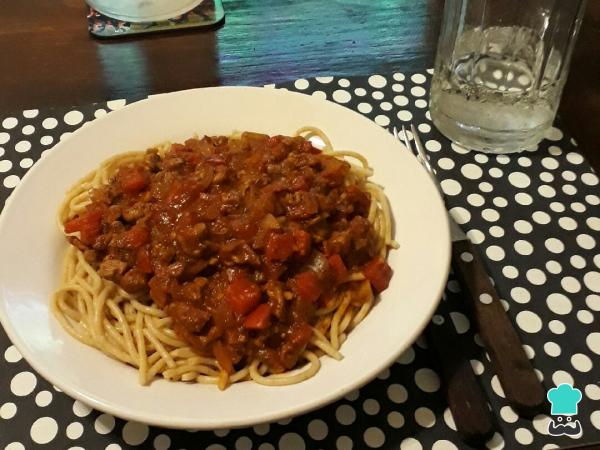

Espaguetis con carne picada

No te pierdas esta receta de espaguetis integrales con carne picada y salsa de tomate estilo boloñesa.
Ingredientes
- 1 morrón colorado
- 2 cebollas medianas
- 500 g de salsa de tomate
- 350 g carne de res
- 1 porción de fideos o spaghetti integrales
Pasos a seguir:
- Cortar las cebollas, el morrón y la carne en cubitos picándolos.
- Colocar la carne picada y las verduras en un wok con un chorro de aceite de oliva y esperar a que se selle la carne y se doren las verduras.
- Mientras hacemos la salsa de la pasta integral a la boloñesa, introducimos nuestros spaguetti en una olla con agua hirviendo.
- Agregamos la salsa de tomate al wok y condimentamos al gusto. Dejamos cocinar unos minutos.
- Una vez que tenemos los spaguetti integrales cocinados y la salsa para pasta lista, los servimos en un plato con los fideos primero y la salsa arriba.
- Último y mejor paso: ¡A DISFRUTAR! de estos espaguetis integrales con carne picada.